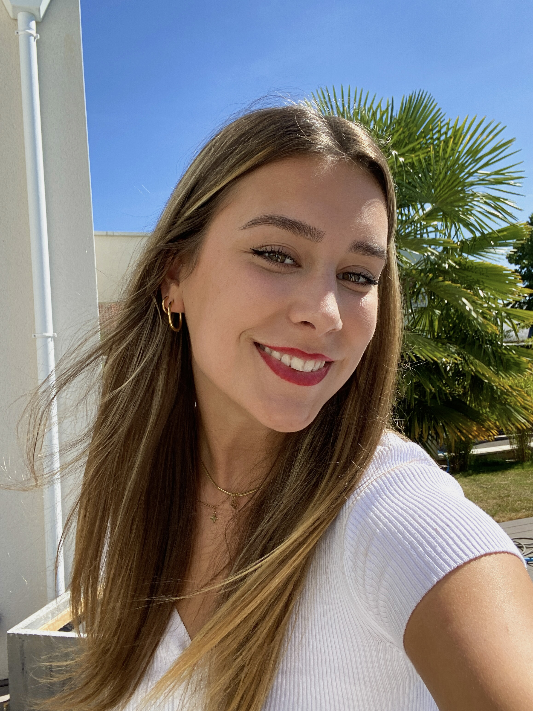

About Me
Welcome to my professional profile!
I am Emi Manieri, I am 21 years old.
I am currently in the 3rd year of a Bachelor Start-Up option at KEDGE BS on the Marseille campus.
Certifications and Education
- KEDGE Bachelor in 2022 to 2025
- Esthetic school in 2021
- BAC ES in 2020
- TOSA Certification
Languages
I speak English well, I have a B2 level, I was able to obtain this level through my internship experience in Bali over several months.
I also speak Spanish with an A2 level.
Hobbies
I have different hobbies, the main ones are:
- Travel, I have always had a taste for travel and this was further enhanced by my internship in Bali last year.
- I also really like skiing, I often go away in winter for weekends to ski.
- Cheerleading is also something I enjoy doing in my free time.
- And finally, I often go to the gym.